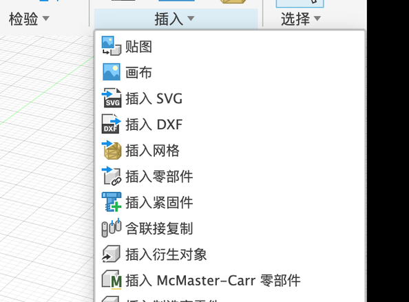
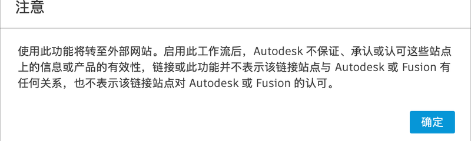
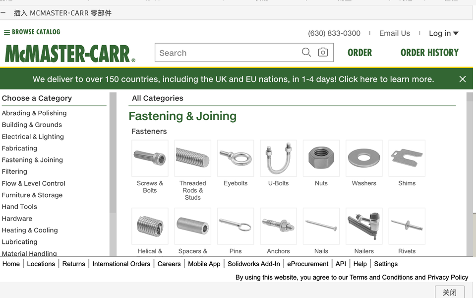
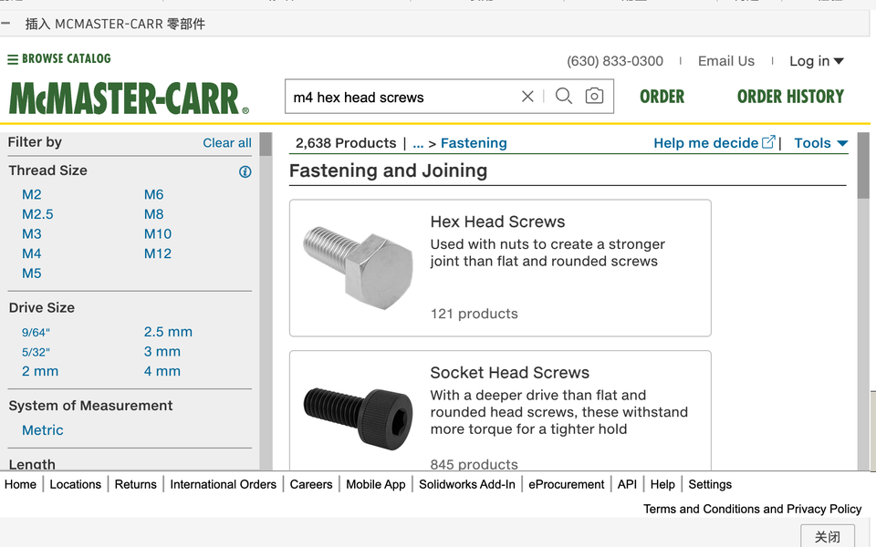
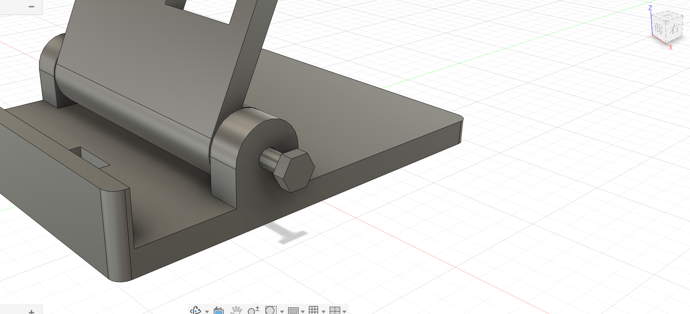
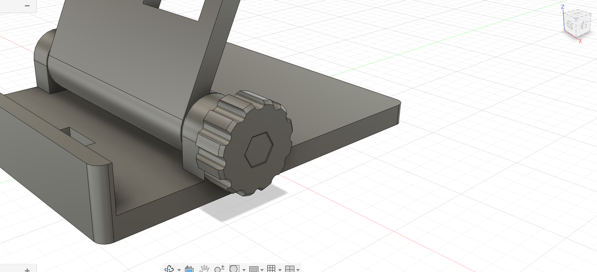
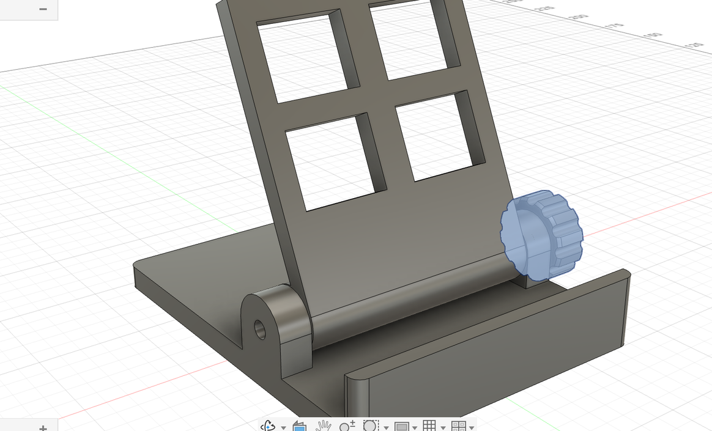
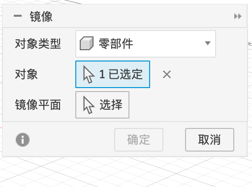
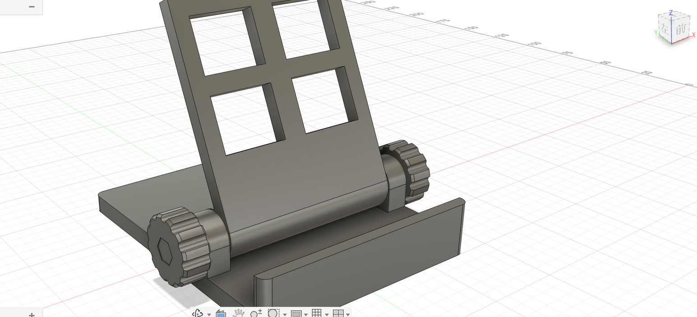

P6 螺丝与螺母
螺丝和螺母是“标准件”，不用自己设计，可以直接从 Fusion 自带的零件目录里拿，也可以自己画一个简化的。最后用镜像把右边的旋钮、螺丝、螺母复制到左边。
方法 A：从 McMaster-Carr 插入#
McMaster-Carr 是一家美国的五金零件商，Fusion 内置了它的在线目录，里面的螺丝、螺母、轴承都有现成的 3D 模型。
- 激活根，「插入 ▾ → 插入 McMaster-Carr 零部件」。

- 先弹出一个“将转至外部网站”的提示，点「确定」。
- 目录窗口打开后，在搜索框里输入
M4 hex head screw，从下拉建议里选一项。 - 左侧用「Thread Size（螺纹规格）」筛选 M4，「Length（长度）」选 20 mm，点进具体零件，选 3D STEP 格式插入。螺母搜
M4 hex nut。



方法 B：自己画一个简化的（本教程用这个）#
简化模型不画螺纹，只要大小、长度对，够检查装不装得下。尺寸按 ISO 标准：M4 螺丝头对边 7 mm、厚 2.8 mm，杆直径 4 mm；M4 螺母对边 7 mm、厚 3.2 mm。
螺丝 M4×20：
- 激活根，「装配 → 新建零部件」，名称
M4×20 螺丝（保持「激活」勾选）。 - 螺丝头：「创建草图」→ 点旋钮的外侧面（就是有六角坑的那一面，坑口所在的平面）。「多边形 → 内接多边形」，圆心点在孔心，6 条边，标对边
7。「完成草图」。 - 按 E，点六边形（中间的小圆不要选），往旋钮里面拉伸
2.8，「操作」选「新建实体」。螺丝头就嵌在六角坑里了（坑深 3，比头厚 2.8 多一点点）。 - 螺杆：「创建草图」→ 点螺丝头朝里的那一面（可以先把旋钮隐藏，方便点）。以孔心为圆心画一个圆，直径
4。 - 按 E，点这个圆，往里拉伸
20，「操作」选「合并」（和螺丝头粘成一个实体）。
螺母 M4：
- 激活根，新建零部件
M4 螺母。 - 隐藏底座（螺母坑在靠背圆筒的端面，被耳朵挡着），「创建草图」→ 点靠背圆筒右端面。
- 画内接六边形（对边
7，圆心在孔心）和一个 Ø4的圆。「完成草图」。 - 按 E，点六边形和小圆之间的那一圈区域，往里拉伸
3.2，新建实体。螺母就卡在 3.4 深的六角坑里。最后把底座显示回来。


镜像到左边#
- 激活根。在浏览器里按住 ⇧ 点选 旋钮:1、M4×20 螺丝:1、M4 螺母:1 三个零部件。
- 「创建 → 镜像」，「对象类型」会自动变成「零部件」。
- 「镜像平面」选根的 YZ 平面（左右正中间），点「确定」。



浏览器里多了三个新零部件：「旋钮(镜像):1」「M4×20 螺丝(镜像):1」「M4 螺母(镜像):1」。